Soft Clay storyboard for review. The review panels come first, then one key frame (or a few) per beat with its timing, exact caption, motion, camera and sound. Every still is rendered from the real scene (the series patient, bed, hands and set from shared/, loaded unchanged), captioned version.
Coloured chips under a panel are gaps measured on the real mesh: a ray from the closest point of each touching part to his skin along the skin normal. Green is within the 1.5 mm rule; amber marks parts that are meant to be lifted or hovering.
aSitting forward, arms folded
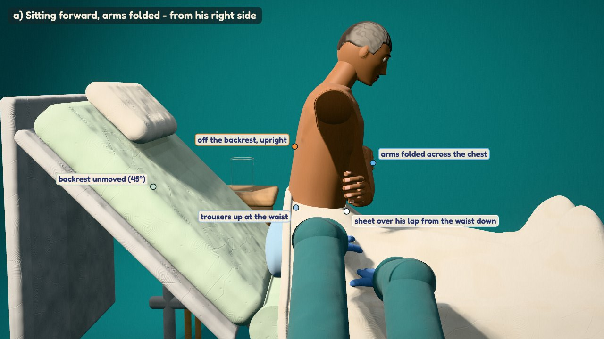
From his right side: upright and off the backrest, arms folded (upper arms down his sides to the bent elbows, forearms crossed in front), the sheet over his lap from the waist down, trousers up at the waist. The backrest stays at 45°.
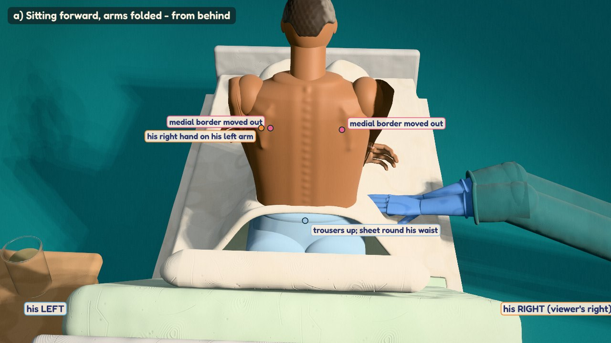
From behind: the shoulder blades have slid out to the sides (medial borders marked); his upper arms run down his sides to the elbows. The examiner's idle hands rest palm down on the sheet beside his right hip.
bBack landmarks
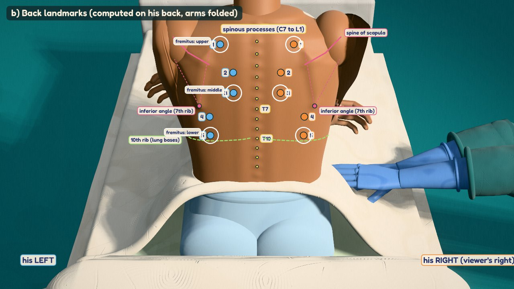
Computed on his own back with the arms folded: spinous processes C7 to L1, both scapular spines (solid) and outlines (dashed) with the inferior angles at the 7th rib, the 10th rib (lung bases), the 5 levels on each side (orange = his right, blue = his left, the same height on both sides) and the 3 fremitus zones (rings: upper = level 1, middle = level 3, lower = level 5).
cHand poses and skin-level checks
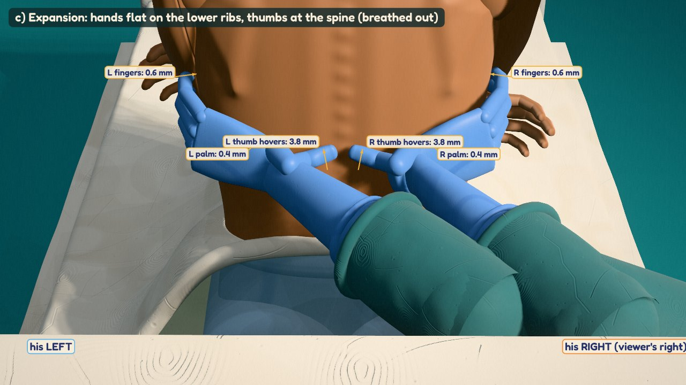
Expansion, breathed out: palms flat on the lower ribs, fingers together across the sides of his lower chest and curled forward round his flanks, thumbs meeting at the spine at the 10th rib. Both forearms come in from his right: the right hand's from beside and slightly behind his right side, the left hand's reaching across his back.
R palm0.4 mm
R fingers0.6 mm
L palm0.4 mm
L fingers0.6 mm
R thumb hovers3.8 mm
L thumb hovers3.8 mm
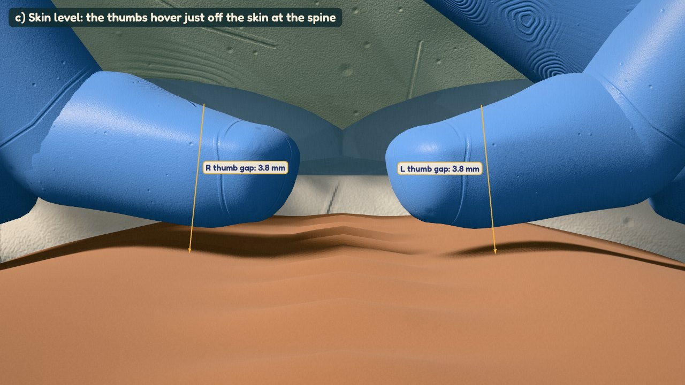
Skin level: both thumbs hover free, just off the skin (they never touch).
R thumb gap3.8 mm
L thumb gap3.8 mm
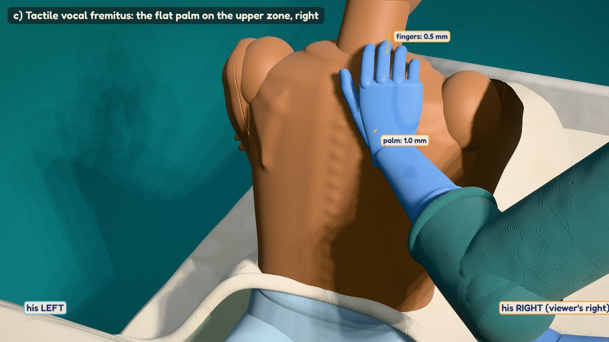
Tactile vocal fremitus, upper zone, right: the flat palm on his upper back, fingers together up over the top of the shoulder; the forearm comes in from his right.
palm1.0 mm
fingers0.5 mm
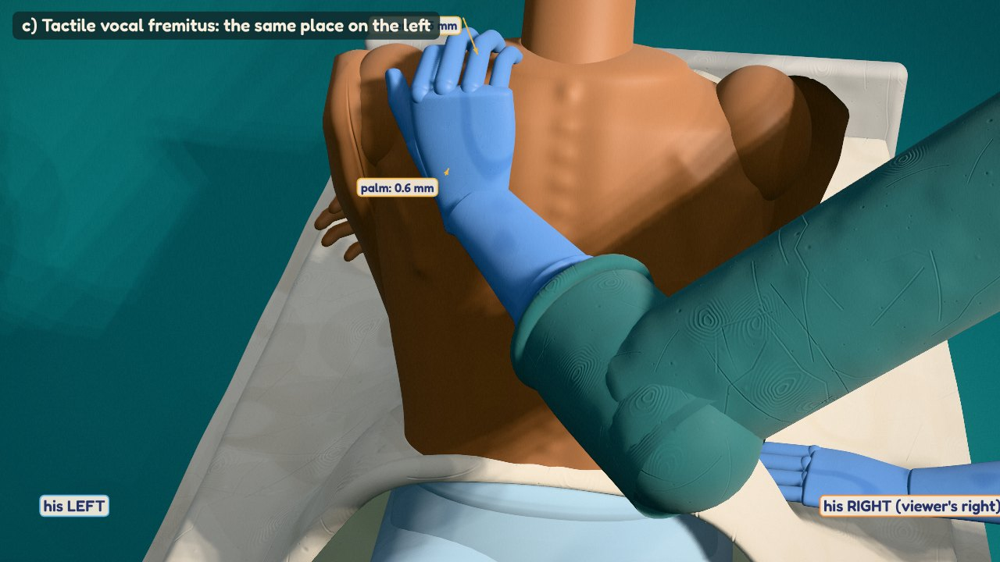
The same place on the left: the same (right) hand reaches across from his right.
palm0.6 mm
fingers0.5 mm
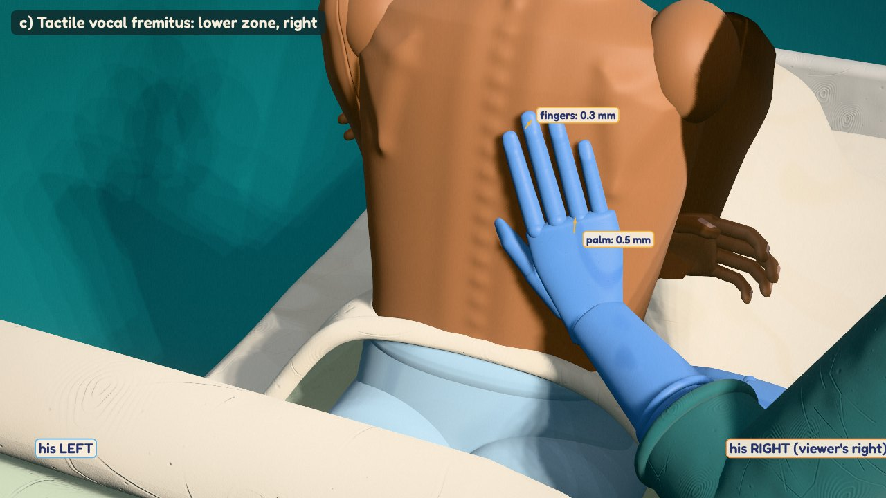
Lower zone, right: palm flat, fingers together pointing up and toward his left.
palm0.5 mm
fingers0.3 mm
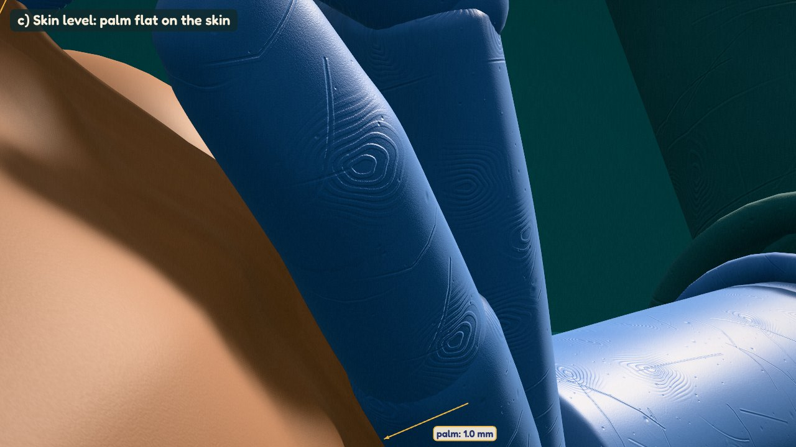
Skin level: the palm on the skin.
palm1.0 mm
middle finger0.5 mm
little finger0.6 mm
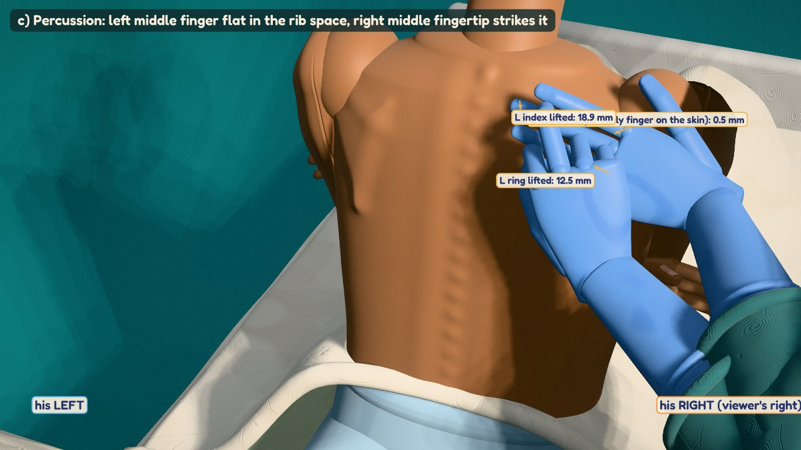
Percussion, strike frame, level 1 right: only the left middle finger lies on the skin along the rib space; the index, ring and little fingers are lifted off. The left hand lies across his back from his right (fingers toward his left); the striking right hand comes from below and to his right. Both forearms leave to his right.
L middle finger (only finger on the skin)0.5 mm
L index lifted18.9 mm
L ring lifted12.4 mm
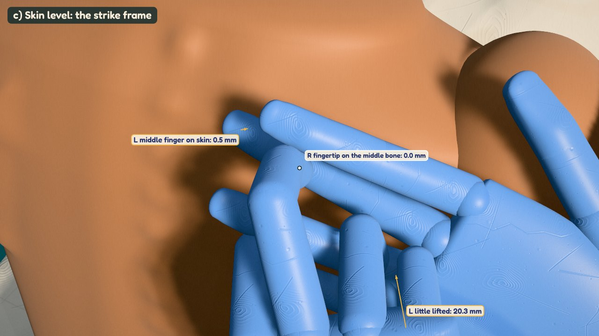
Skin level: the tip of the right middle finger on the middle bone of the left middle finger.
L middle finger on skin0.5 mm
L little lifted20.3 mm
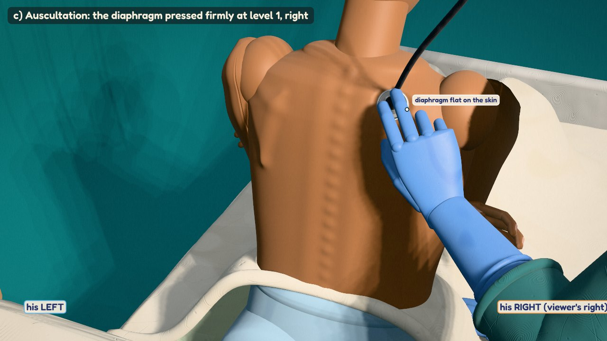
Auscultation, level 1 right: the diaphragm pressed firmly, the hand coming from below and to his right so the chest piece stays in view; the tubing runs up out of frame.
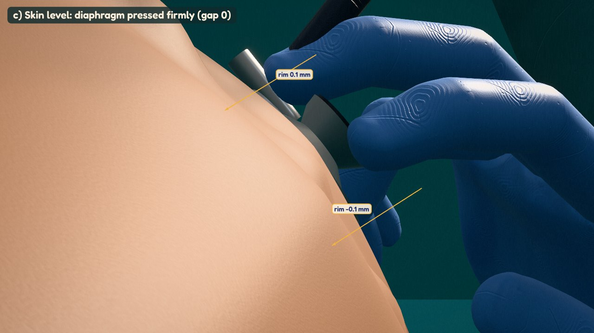
Skin level: the skin presses flush against the whole rim of the diaphragm (gap 0).
diaphragm rim 00.1 mm
diaphragm rim 900.0 mm
diaphragm rim 180-0.1 mm
diaphragm rim 270-0.0 mm
dExpansion: breathed out and breathed in
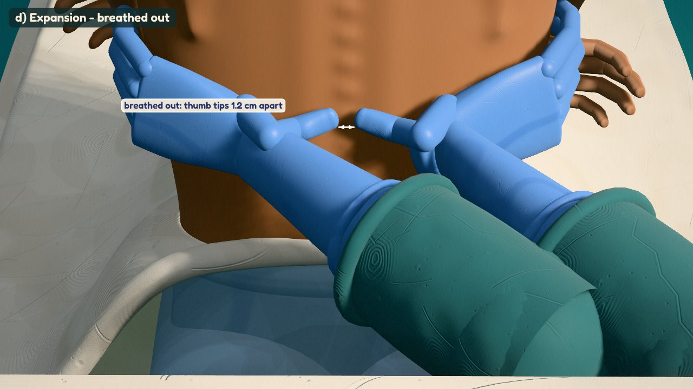
Breathed out fully: the thumb tips almost meet at the spine.
thumb tips apart (breathed out)1.2 cm
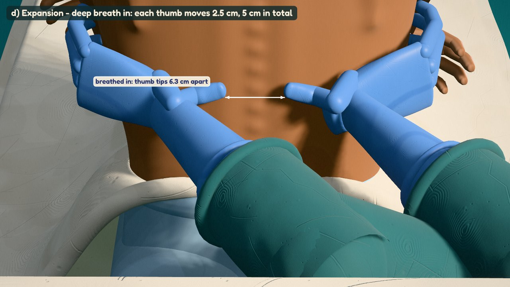
Deep breath in, the same camera: each thumb has moved about 2.5 cm out, 5 cm in total.
thumb tips apart (breathed in)6.3 cm
ePlan view
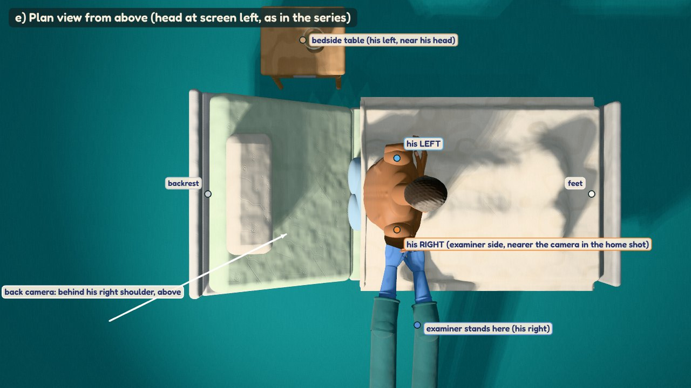
From above, head at screen left as in the series: his right (the examiner's side) at the bottom, his left at the top with the bedside table near his head, and the back camera behind his right shoulder.
Beats captioned version
Start
Home shot
0.0 – 1.0 s
On screen
(no caption)
What changes
The series home shot: reclined at 45°, sheet from the waist down, gloved hands resting at his right side. Held still; breathing and lamp flicker off.
Camera
SET.HOME, still.
Sound
Room ambience fades in over the first 0.5 s.
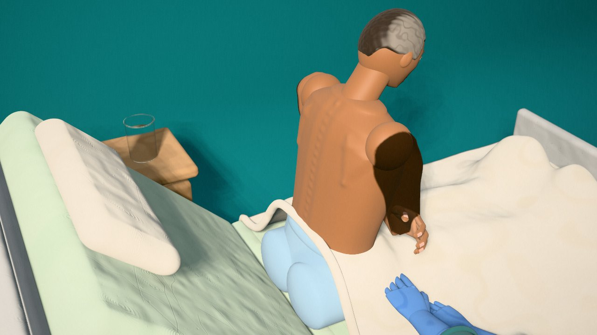
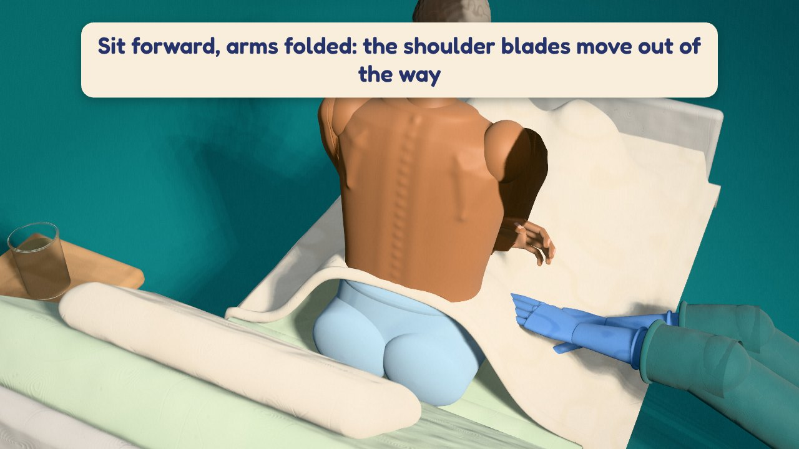
1
Sitting forward
1.0 – 7.0 s (hold 1.0 – 2.5 s)
On screen
4.7 – 7.0 s, top: "Sit forward, arms folded: the shoulder blades move out of the way"
What changes
Hold: picture still, no caption (speech goes here). 2.5 – 4.4 s he leans forward off the backrest, 3.4 – 5.0 s he folds his arms across his chest; the shoulder blades slide out to the sides. The sheet re-drapes round his waist and lap, the trousers stay up. The bed does not move.
Camera
Holds the home shot through the hold, then one continuous dolly round to behind his right shoulder, above, looking down onto his back (2.5 – 6.2 s).
Sound
Mattress creak and sheet rustle as he sits up (2.5 s), a soft camera whoosh (2.7 s).
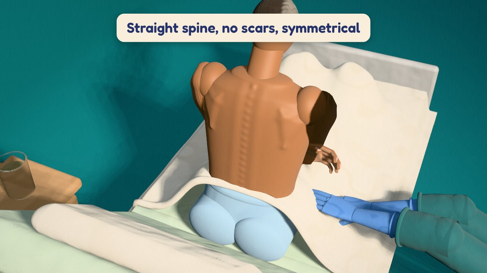
2
Inspection of the back
7.0 – 12.0 s
On screen
7.5 – 11.9 s, top: "Straight spine, no scars, symmetrical"
What changes
He breathes quietly (16 a minute, mouth closed, chest and upper abdomen together). Nothing else moves.
Camera
Passes over his back: whole back, up toward the shoulders, down toward the lower ribs, back to the whole back.
Sound
Room ambience, a soft whoosh (8.6 s).
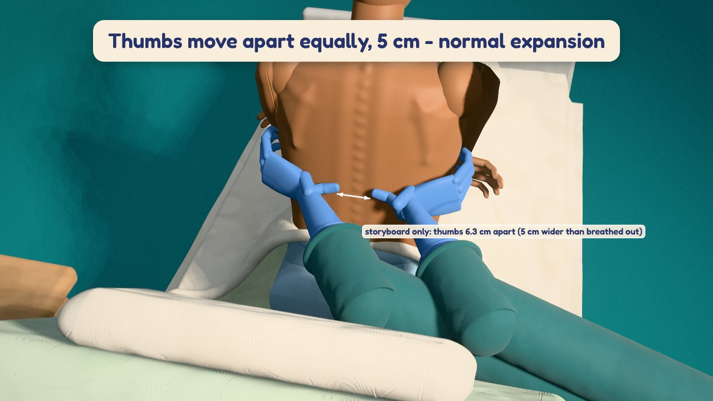
3
Expansion at the back
12.0 – 22.0 s
On screen
15.6 – 21.8 s, top: "Thumbs move apart equally, 5 cm - normal expansion"
What changes
12.2 – 13.4 s both hands travel relaxed onto the lower back ribs, fingers together across his sides and curled forward round his flanks, thumbs at the spine at the 10th rib, hovering 4 mm off the skin. 13.6 – 15.4 s he breathes out fully; 15.4 – 18.2 s deep breath in: the thumbs move apart 2.5 cm each (5 cm); 18.2 – 20.4 s out again, the thumbs come back together. 20.6 – 21.6 s hands back to rest. (The white 5 cm arrow is storyboard only.)
Camera
Moves in a little, centred on his lower back, held through the breath.
Sound
Two soft glove squishes as the hands land (13.4 s). No breath sounds (no stethoscope on the skin).
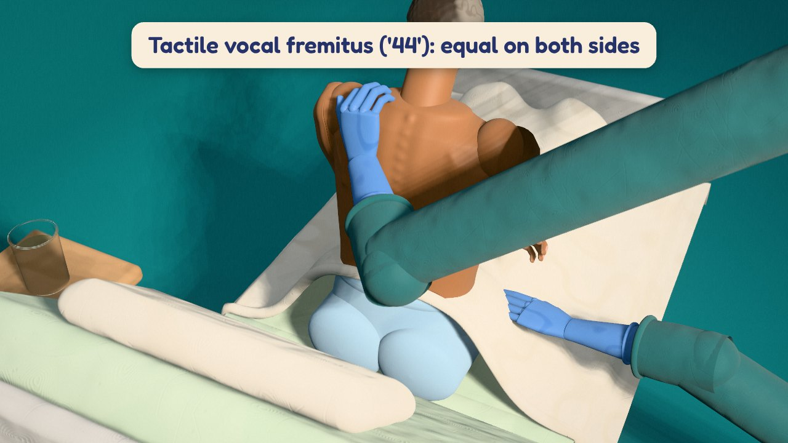
4
Tactile vocal fremitus
22.0 – 32.0 s (hold 22.0 – 23.5 s)
On screen
24.0 – 31.9 s, top: "Tactile vocal fremitus ('44'): equal on both sides"
What changes
Hold: still, no caption (he is asked to say "44"). Then the flat palm of the right hand (coming in from his right) rests on: upper right 23.9, upper left 25.3, middle right 26.7, middle left 28.1, lower right 29.5, lower left 30.9 s (about 0.95 s each). At each he says "44": jaw and lips move, no sound.
Camera
The back shot, still.
Sound
A soft squish as the palm lands at each site. Silence for "44" (added later).
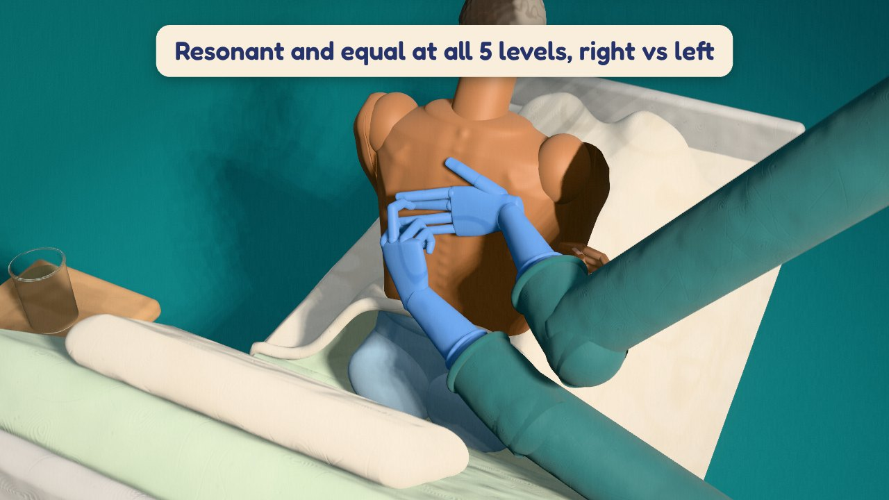
5
Percussion
32.0 – 48.0 s
On screen
33.4 – 47.6 s, top: "Resonant and equal at all 5 levels, right vs left"
What changes
Left middle finger along the rib space (the left hand lies across his back from his right), the other fingers lifted; the right middle fingertip strikes its middle bone twice from a loose wrist and lifts straight off. Levels 1 to 5, right then left at each level: R1 33.5, L1 34.9, R2 36.3, L2 37.8, R3 39.2, L3 40.6, R4 42.1, L4 43.5, R5 44.9, L5 46.3 s. (Frame shown: level 3 left, strike frame.)
Camera
The back shot, still.
Sound
A resonant note (low, hollow, ringing a little) on the exact frame of each of the 20 strikes; identical right and left.
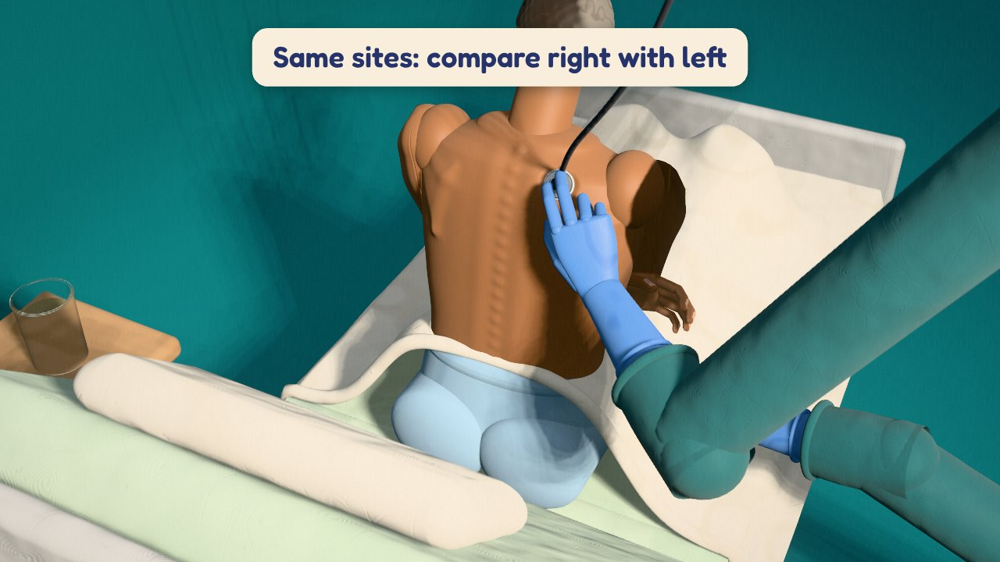
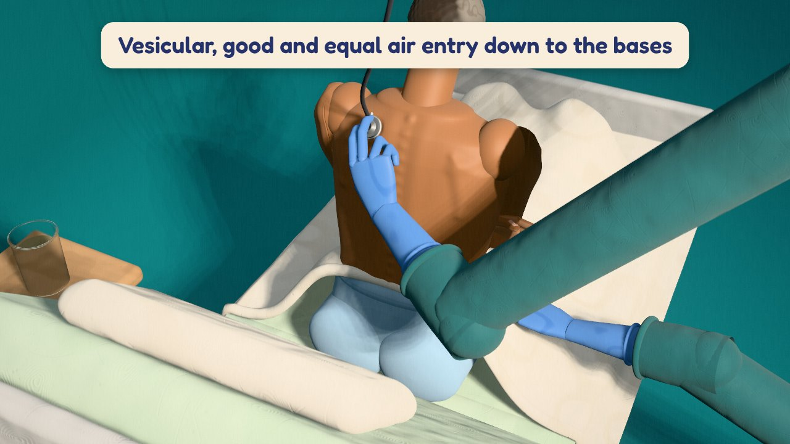
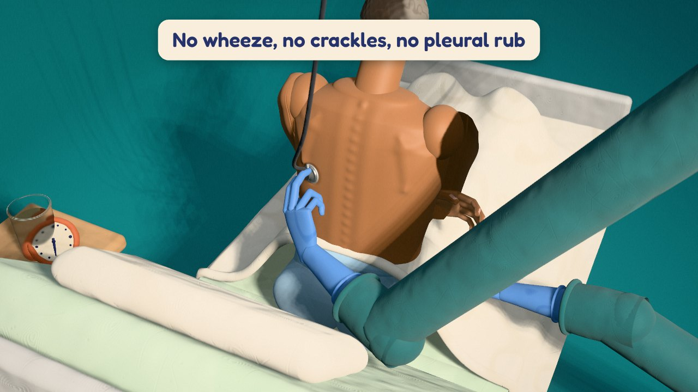
6
Auscultation
48.0 – 72.0 s (hold 48.0 – 49.5 s)
On screen
50.8 – 56.5 s: "Same sites: compare right with left" · 56.8 – 66.7 s: "Vesicular, good and equal air entry down to the bases" · 67.0 – 71.8 s: "No wheeze, no crackles, no pleural rub" (all top)
What changes
Hold: still, no caption (he is asked to breathe deeply through his open mouth). The chest piece pops into the right hand (49.8 s). Diaphragm pressed firmly at level 1 right (50.6 – 56.0 s) and left (56.6 – 62.0 s), one full deep breath at each, lips apart. Then quicker, time sped up (the small clay clock on the bedside table races): levels 2 to 5, right then left, one short breath at each (about 1.2 s per site), ending at the bases.
Camera
The back shot, still.
Sound
Vesicular breath sound only while the diaphragm is on the skin, from the same breathing schedule: grows through inspiration, fades early in expiration, no gap. Equal both sides. A soft tock as the chest piece lands; clock ticks during the quick run.
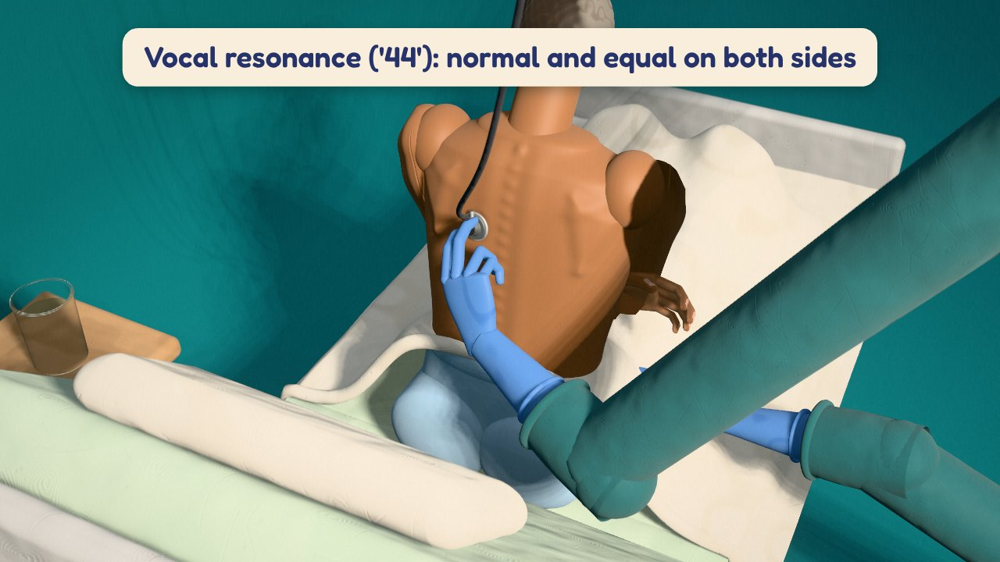
7
Vocal resonance
72.0 – 81.0 s
On screen
72.5 – 80.7 s, top: "Vocal resonance ('44'): normal and equal on both sides"
What changes
The diaphragm at the upper, middle and lower zones, right then left (72.4, 73.9, 75.3, 76.7, 78.1, 79.5 s); he says "44" at each (jaw and lips move, no sound).
Camera
The back shot, still.
Sound
A soft tock as the chest piece lands. No breath sound while he speaks, no sound for "44".
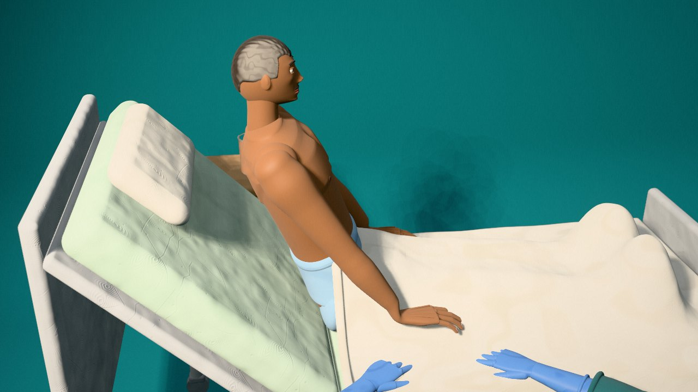
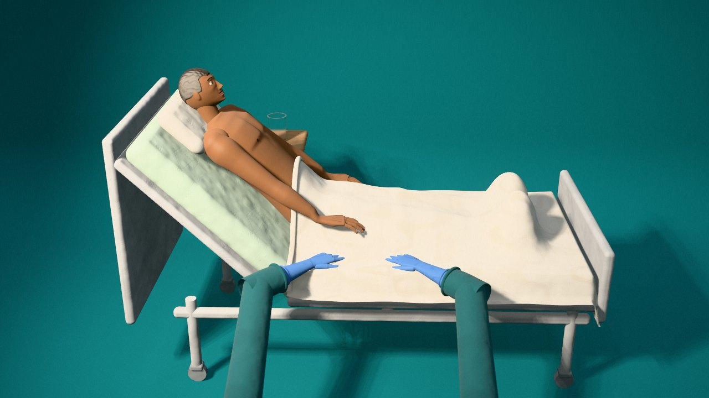
8
Lying back
81.0 – 87.0 s (last 1 s locked)
On screen
(no caption)
What changes
81.0 – 81.4 s the stethoscope goes; 81.2 – 82.6 s he unfolds his arms; 81.6 – 83.6 s he leans back onto the 45° backrest, arms back at rest; 81.4 – 82.8 s the examiner's hands return to rest at his right side. From 84.0 s the home shot holds 3 s; 86.0 – 87.0 s is exactly the home frame (breathing and flicker off).
Camera
Pulls back over his right side to the home shot (81.0 – 84.0 s), then still.
Sound
Small pop as the stethoscope goes, mattress creak, a long soft whoosh; the ambience fades out over the last 0.5 s.
What I checked in every panel
Hand contact rules: each named part touches with a gap under 1.5 mm, nothing sinks in; no upright or waving hands, no V; fingers together except the lifted pleximeter fingers; hands travel relaxed between contacts.
Every site is off the shoulder blades and the spine, at the same height on both sides (panel b).
Percussion: only the left middle finger touches the skin; expansion: the thumbs hover free.
Arms folded and the shoulder blades moved out (panels a, b).
Right and left against the screen: seen from behind, his right is on the viewer's right (all back panels); plan view (e).
His neck stays the series' slim neck; no text in the scene apart from the captions (the review labels are storyboard only).
The last frame matches the first: both are the shared home shot with breathing and flicker off.
Facts and numbers I assumed
Length 87 s (about 90 s as asked): start 1 s, beats of 6, 5, 10, 10, 16, 24, 9 and 6 s.
His back: vertebral levels 2.35 cm apart, C7 at the base of the neck, T7 (inferior angles) 14 cm below C7, T10 21 cm below C7. The 10th rib slopes down 1.7 cm per 10 cm out from the spine.
The 5 levels (distance from the midline / height): 1) 7.4 cm, 3.1 cm below C7 (above the scapular spine, medial to the superior angle); 2) and 3) 4.8 cm, between the scapula and the spine; 4) 10 cm, 2.5 cm below the inferior angle; 5) 10 cm, just above the 10th rib.
With the arms folded the medial border of each shoulder blade moves from 6.2 cm to 9.8 cm from the midline (and the inferior angle further out).
Expansion: the thumbs hover 4 mm off the skin. Because the thumbs point to the spine, the fingers rise a little (about 15°) as they wrap round his flanks; a hand cannot lay its thumb and its fingers along one horizontal line. Breathed out the tips are 1.1 cm apart; at the top of the deep breath 6.1 cm (5 cm more, 2.5 cm each).
Quiet breathing 16 a minute. Deep breaths at level 1 last 4.9 s each (about 12 a minute; I can slow them to 10 a minute, which adds about 2 s). Levels 2 to 5 use one short breath each (0.85 s) shown as sped-up time with the clay clock (about 45 s of real time in 9.6 s).
Every examiner arm comes in from his right: the elbow sits beside and slightly behind his right side, above the bed and clear of the backrest, and the sleeve rises to the examiner's shoulder beside his right shoulder, leaving the frame on screen right. The two-hand steps put the right hand on his right side and the left hand reaching across to his left. When a hand is not working it rests palm down on the sheet beside his right hip. Fremitus uses the examiner's right hand on both sides (moved right to left, as written). Percussion uses the left middle finger as the pleximeter (fingers pointing to his left, along the rib space) and the right middle finger to strike, two strikes per site.
Gaps: palms and fingers 0.2 – 0.6 mm; the diaphragm is pressed in until the skin lies flush with its whole rim (about 1 – 3 mm deep at the centre: "pressed firmly").
"44": the jaw and lips move, but from behind his face is mostly hidden. I can add a short cutaway of his face if you want the lips visible.
No breath sound during vocal resonance (he is speaking, the voice is added later).
The chest piece pops into the hand in stop-motion (no pick-up from a surface); the tubing runs up out of frame.
Captions are all at the top (they cover only the back of his head; never the hands or the sites).
Built in my own code, shared/ untouched: the sitting pose, a second drape of the shared sheet for sitting, a pyjama seat shown only when he sits up, a finer copy of his trunk mesh while sitting (same shape; avoids stripe artifacts on the new spine relief), rounded elbows inside the sleeves while sitting. The home shot uses only the shared models, so it matches parts 1 and 2.
This machine has no GPU: the stills are software WebGL at 10 – 16 samples (a little noise and soft shadow banding is expected). The final MP4s render on your PC with npm start (next round).